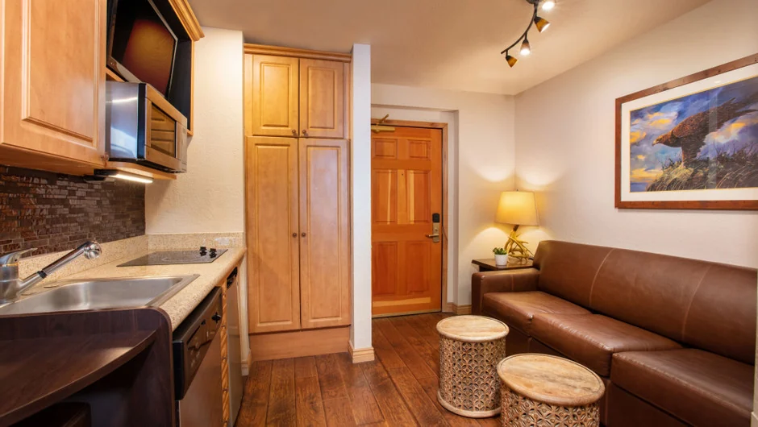
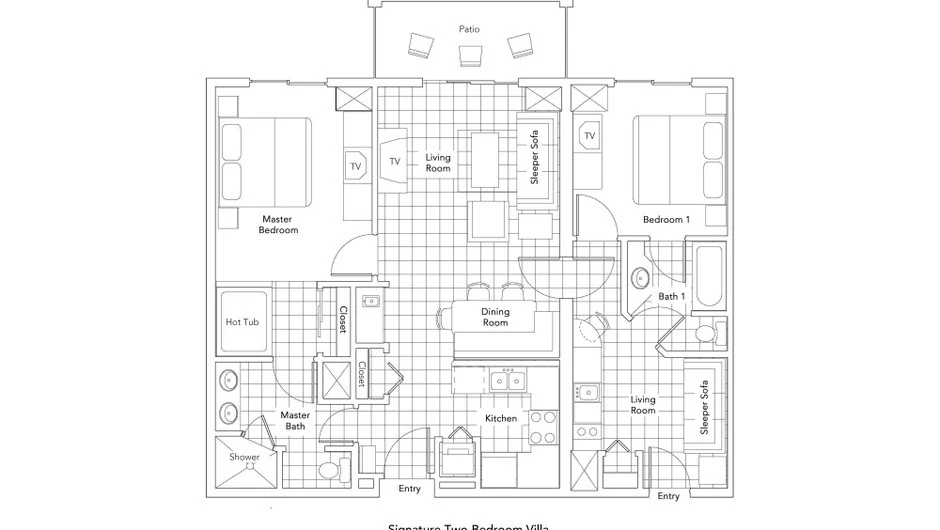

A multi-family ski trip in Park City is usually decided by something nobody checks on a booking page: how many front doors the unit has. Two families in one villa works or fails on whether the space can genuinely be divided, not on the nightly rate.

Why two families book the wrong shape of lodging
There are two defaults for a trip like this and both share a flaw. A large rental house solves floor area and creates a drive to the lifts every morning plus a queue for the nearest bathroom. A pair of adjoining hotel rooms solves proximity and leaves two families with no kitchen and nowhere to sit together after dinner.
What two families need is not more space. It is separable space. One family can share a living room happily for a week; two families need somewhere to retreat to at nine o'clock, when one set of children goes to bed and the other does not. That requirement is architectural, and it is either in the floor plan or it is not.
What the lock-off layout actually gives two families
Our Premier Two-Bedroom Villa at Westgate Park City Resort is 1,100 square feet: two king bedrooms, two queen sleeper sofas, two bathrooms with walk-in showers, sleeping eight. The part that matters here is how it is put together rather than what it adds up to.
The unit is built as a main side and a lock-off studio. The main side carries the full kitchen and the larger living area; the studio has its own front door off the corridor and its own kitchenette. Listings for this unit type routinely describe the lock-off as suited to two families travelling together, which is not marketing language but a description of the plan. Two entrances, two living areas, two bathrooms.

Set against two hotel rooms, the gap is not the rate: two rooms give two families no shared ground, while this gives them two of everything and a kitchen table everyone can sit at. Our villa against two hotel rooms comparison works it through in cost terms.
How do you divide the space between two families?
Start from the kitchen. The family with the youngest children should take the main side, because a small child's day is run out of a kitchen — bottles, early breakfasts, the snack at four o'clock when everyone is ruined. Putting that family in the studio with a kitchenette creates a week of small frictions.
The useful exception is timing. If one family lands late on the first night or leaves before dawn on the last, give them the studio regardless of size. Its own entrance means they can arrive at eleven and leave at five without walking through anybody's living room, and on a changeover day that is worth more than counter space.
Treat the bathrooms as one per side rather than two shared. It sounds trivial written down and it is the difference between a calm ski morning and a bad one. Where young children are involved, the ski school and childcare logistics matter more than the allocation does, because the morning is governed by whoever has the earliest lesson.
How should two families split the cost?
Four methods get used, and the one most groups reach for first is the one that causes the argument.
| Method | Suits | Where it goes wrong |
|---|---|---|
| Per head | Two families of the same size | Penalises the family with more children for occupying a sofa bed |
| Per bed used | Groups of adults | A toddler sharing a bed counts as nothing, which nobody believes |
| Per side | Families of different sizes | Needs both sides to feel comparable, so agree the allocation first |
| Flat 50/50 | Close friends who will not count | Quietly resented by the smaller family by about day four |
Split by side when the two families are different sizes. What each family buys is a bedroom, a living area and a bathroom, not a headcount of mattresses, and pricing it that way stops an audit of who slept where. Settle food separately, which is where the real variation lives.
Two notes specific to a shared booking. The resort fee is charged per unit, not per family, so it lands as one line on one bill and somebody has to front it. And because the villa is rented directly by the owners, there is one invoice and one person to ask rather than two cancellation policies that may not agree. Our cost breakdown for a group of eight is the figure to divide.
The villa this guide is written from
We own three Premier Two-Bedroom Villas inside Westgate Park City Resort, in Canyons Village. Each is 1,100 square feet — two king bedrooms, two queen sleeper sofas, sleeping eight — with a full kitchen, a kitchenette in the lock-off studio, two bathrooms with walk-in showers, and a short walk to the Red Pine Gondola. The two front doors are the reason two families fit.
Our open weeks for 2027 are Presidents' Week, 13 to 20 February, and spring break, 21 to 28 March. Rented directly by the owners, so one conversation covers one villa or all three.
What two families should agree before booking
Four things, all easier to settle in November than in February. Who takes which side, decided from the kitchen and the arrival times rather than by seniority. How the cost divides and who pays the deposit, written in a message so it exists somewhere other than memory. Whether meals are shared or separate — the most common source of friction on a shared ski week, and "some of both" is a fine answer as long as it is said out loud. And what happens if one family drops out, worth asking the owner before you commit.
When two families should take two villas instead
One villa suits two families of four, or a family of five and a couple. It does not suit two families of five, and it does not suit a combination where both sets of children are under six and on different bedtimes — eight people in 1,100 square feet is comfortable, but it is not soundproof.
At that point take two villas and have eight each. Three families can take all three, which is how a party of up to 24 guests works in practice. The jump from one villa to two is not a different kind of trip; it is the same trip with the retreat space moved from a studio to a corridor.
Multi-family ski trips in Park City: common questions
Can two families share one two-bedroom villa in Park City?
Comfortably, if the two families add up to eight or fewer. The Premier Two-Bedroom Villa is 1,100 square feet with two king bedrooms, two queen sleeper sofas and two bathrooms, and it divides into a main side and a lock-off studio. Two families of four is the shape it suits best.
Does the villa have two separate entrances?
Yes. The main side and the lock-off studio each have their own front door off the corridor, which is what the floor plan shows. That is the single feature that makes a shared unit feel like two homes rather than one crowded one.
How should two families split the cost of a ski villa?
Split by side rather than by head when the two families are different sizes, because what each family is buying is a bedroom, a living area and a bathroom rather than a number of beds. Then settle food separately, since that is where the real variation sits.
Which family should take the lock-off studio?
Usually the one without young children, because the main side holds the full kitchen and the larger living area. The exception is a family arriving late or leaving early, who are better off in the studio because its own entrance lets them come and go without crossing anyone.
How many bathrooms does the villa have?
Two, both with walk-in showers, and one sits on each side of the unit. For two families that works out at one bathroom per family, which is the arrangement to keep rather than treating both as shared.
What if two families need more space than one villa?
Take two villas. We own three Premier Two-Bedroom Villas in the same resort, so two families can have eight each, and a larger party can go up to 24 across all three. One enquiry covers whichever combination you need.